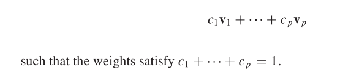
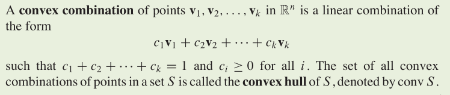
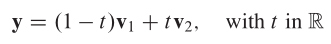
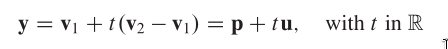
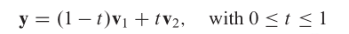
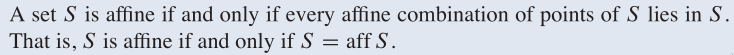
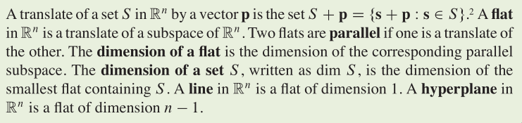
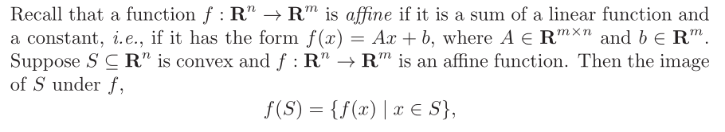
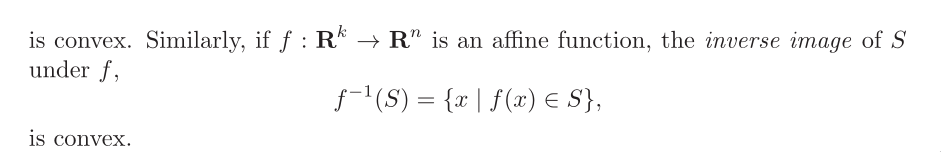
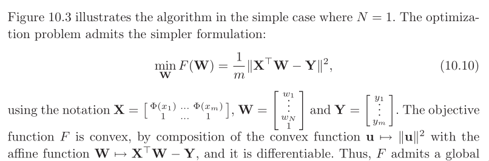

Affine combinations
What properties do lines have in 2‐space and planes have in
3‐space that would be useful in higher dimensions?
The hyperplanes will be important for understanding the multidi‐
mensional nature of the linear programming problems.
What would be the analogue of a polyhedron "look like" in more
than three dimensions?
A partial answer is provided by two‐dimensional projections of
the four dimensional object, created in a manner analogous to two
dimensional projections of a three‐dimensional object.
Given vectors v1,v2,v3, ...

affine hull
convex combination and convex hull:

The affine hull of distinct points v1 and v2 is the line

y‐v1 is a linear combination:

The convex hull is the line segment.

Affine set:


‐2‐
affine‐invariant property
Self‐concordance is an affine‐invariant property, i.e., if
we apply a linear transformation of variables to a self‐concor‐
dant function, we obtain a self‐concordant function. (Therefore
the complexity estimate that we obtain for Newton’s method ap‐
plied to a self‐concordant function is independent of affine
changes of coordinates.)
What about convexity? If we apply a linear transformation of
variables to a convex function, do we obtain a convex function?
operations that preserve convexity
1. intersection
2. affine functions


